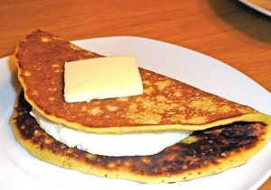

Bandeja paisa
La bandeja paisa es el plato más representativo y la insignia de la gastronomía antioqueña, y es propio de esta región, Antioquia.Una de las características fundamentales de este plato es su abundancia, tanto en cantidad como en variedad de alimentos, de tal modo que la bandeja paisa completa solo cabe servirla en platos grandes llamados bandejas.En su forma y composición actual, es un plato de desarrollo reciente; para los paladares del resto de Colombia, como desarrollo de estrategia comercial y culinaria, no aparecen referencias en los libros de cocina anteriores a 1950 ni en otros documentos anteriores a esa fecha en la gastronomía colombiana,[cita requerida] pero por esta razón no quiere decir que es un plato nuevo. El plato tiene sus orígenes en el envuelto antioqueño, que desde mediados del siglo XIX conformaba la única alimentación que acompañaba al arriero de la región antioqueña y del antiguo Viejo Caldas.
Excelente restaurante tipico en la calle de la buena mesa Envigadeña...su plato insignia que le da nombre al restaurante toda una delicia de la cocina colombiana ....sin remordimientos
El mejor chicharrón de la región , si se quiere probar la verdadera gastronomía paisa , este lugar de tradición ofrece varias alternativas , sus platos son muy generosos
Cachapa
La arepa de choclo, cachapa, chorreada o maíz jojoto es un plato típico a base de maíz de Colombia, Costa Rica y Venezuela. Debido a los intercambios migratorios con Venezuela, también se ha difundido a las Islas Canarias.
Buena comida, criolla y hasta ponche crema. Las Cachapas, cochino frito, hervidos y el famoso ponche crema andino
el chupe que preparan es insuperable , sus ricas cachapas de maíz pilado deleitaran tu paladar. De verdad lo recomiendo 100%. Buena atención